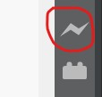
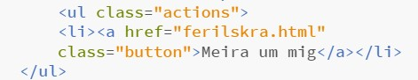
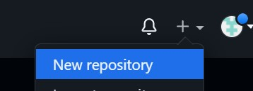
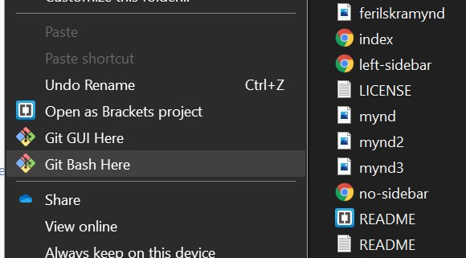
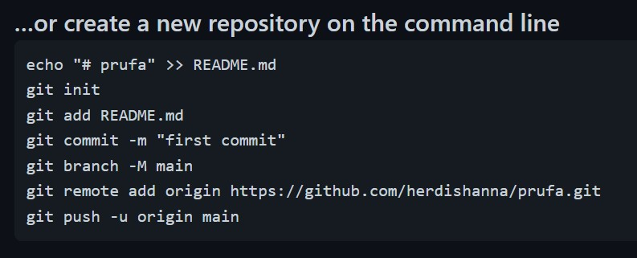
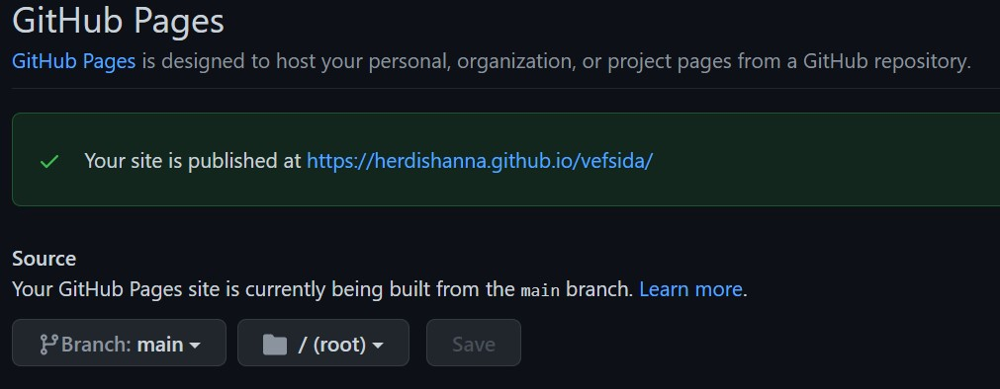

Lýsing á framkvæmd verkefnis
Ég hafði aldrei áður unnið með HTML svo þetta umhverfi var nýtt fyrir mér. Það fyrsta sem ég gerði var að horfa á myndböndin hér. Þetta nýttist til að vita hvar maður ætti að byrja. Fyrsta skref var því að sækja forritið Brackets en það er þægilegt umhverfi til að skrifa HTML í. Á meðan það var að hlaðast niður fór ég að skoða template á vefsíðunni HTML5UP en þar voru ýmis falleg template til að velja úr. Þegar kemur að vefsíðuhönnun þá skiptir miklu máli að hún sé falleg en einnig þægileg til notkunar. Það voru því áherslurnar sem ég setti fyrir valið en einnig þarf að hafa í huga til hvers síðan sé; nú til að sýna verkefnin á skýran máta sem og ferilskrána. Það þarf því ekki ýkja flókið útlit og var templateið Landed valið. Það sýndi einfalda en stílhreina forsíðu og augun fóru strax að valmöguleikunum efst en þar undir ætlaði ég að setja ferilskrá og verkefnin. Auðvelt var að hlaða niður templateinu af vefsíðunni og færa yfir í möppu sem verður notuð mikið í næstu skrefum.
Að hanna í Brackets
Myndbönd kennarans nýttust vel hér, einfalt var að draga index.html skjalið úr möppunni, sem templateið var sett í, yfir í Brackets gluggann og þá birtist kóðinn. Síðan til að sjá preview af síðunni hverju sinni þurfti bara að ýta á efra táknið á hægri hlið eins og sést á mynd.
Pro tip: það þarf eingungis að ýta á ctrl+s í skjalinu sem verið er að vinna í þá uppfærist chrome glugginn með previewinu sjálfkrafa. Gerði þau mistök fyrst að vera að loka og opna chrome gluggann til að sjá breytingar
En þegar index skjalið er komið inn er best að byrja að hanna forsíðuna, ákveða hvernig grunnurinn eigi að vera svo hægt sé að samræma á milli allra hinna html skjalanna sem þarf síðan að vinna í. Eitt af skjölunum sem fylgir layoutinu er elements.html en það sýnir margar mismunandi útfærslur á texta í html sem sniðugt er að notast við. Templateið nýttist til að setja inn myndir en format á öllum kóðabútum var nú þegar inn í skjölunum. Þá var bara að púsla réttu hlutunum saman. Nokkrir hlutir sem ég komst að og nýtti mér vel
- Láta takka virka: Setja inn eftirfarandi kóðabút og hafa undir href það html skjal sem takkinn á að leiða í 
- Skoða síður hjá fyrrum nemendum, oftast er vandamálið lítið og með því að inspecta sér maður strax hver lausnin er. Skoðaði sérstaklega hér og hér hér.
- Stilla upp header í einu html skjali og copya honum öllum yfir í önnur svo það sé samræmi. Minnkar líkur á vitleysum.
- Til að opna nýjan glugga þegar notandi ýtir á link er sett target="_blank" á eftir linknum.
Uppsetning ferilskrár
Ég vildi að ferilskráin sýndi fyrri störf, félagsstörf og tengingu við Linkedin. Hafði hana bara einfalda með header fyrir yfirheitin, nokkrum punktum undir hverju og svo takka til að finna mig á Linkedin. Hana má nálgast hér.
Færa yfir á git
Hér komu upp helstu vandræðin vegna takmarkaðrar reynslu á git og að tengja við repository. En þetta tókst loks og hér má sjá skrefin frá því nýtt repository er búið til og þar til vefsíðan er komin í loftið. Tilgangurinn með github er að ná að tengja þínar eigin skrár á desktopinu þar inn svo bæði aðrir geti unnið í þessu eða til að gefa út glænýja vefsíðu.
- Búa til aðgang eða logga sig inn á git hér að því gefnu að búið sé að downloada git á tölvuna sem ég var búin að gera fyrir annan áfanga og því ekki með skrefin fyrir það en þessi síða síða myndi eflaust nýtast til þess. Þá má opna nýtt repository eins og sjá má á mynd. 
- Velja einfalt nafn á það og halda hakinu við public svo hægt sé að birta vefsíðuna.
- Vera inni í möppunni þar sem html skjölin eru, hægri smella og velja Git Bash here 
Þá opnast terminal og í það er copyað af github sem kom þegar repo-ið var búið til. Sjá að neðan
 - Þá ætti að virka að fara aftur í repository-ið, refresha og öll skjölin komin miðað við myndband frá kennara. Mitt virkaði hins vegar ekki strax, hélt ég hefði gert eitthvað vitlaust og hafði ekki alveg skilning á það hvernig þetta virkaði. Eina skjalið sem birtist var README en ekki öll hin gögnin. Bjó þá í flýti og hugsunarleysi til nýtt repo undir öðru nafni og fór í gegnum skrefin aftur. En þá kom upp villan: remote origin already exists. Því jú, ég var búin að stilla origin möppunnar á hitt repoið. Fann leið til að laga það hér. Þurfti síðan að skrifa eftirfarandi í terminal:
git add .
git commit -m "nafn á updatei"
git push
Þá birtust loks öll skjöl inni á github. - Til að birta formlega vefsíðuna er farið í settings í þínu repository, skrollað niður að Github pages. Ferð á nýja svæðið, breytir í source frá None í Main og vistar. Bíður í smá og þá kemur linkur að vefsíðan sé komin í loftið!
Leitarorð sem ég notaði voru: github repository, img class html